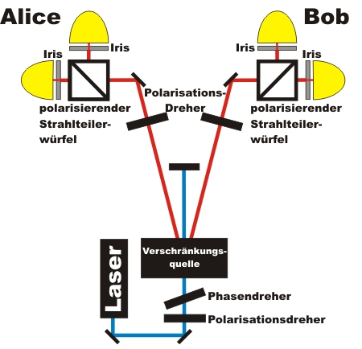
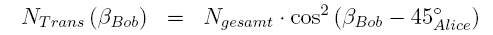
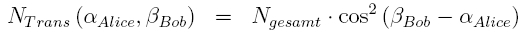

Verschränkung Kapitel A:
Wie verhalten sich verschränkte Photonen
bei der Messung?
Auf der folgenden Seite wird gezeigt, wie sich in der Polarisation verschränkte Photonen bei der Messung unter gleichen und unterschiedlichen Winkeln verhalten. Der Versuchsaufbau ist in Abb. 1 dargestellt. Die Erklärung der Kristallkombination und der Iriden vor den Detektoren erfolgt in Kapitel_B. Die Erklärung der λ/2 und λ/4 Platte vor dem Kristall erfolgt in Kapitel_C. Bei den folgenden interaktiven Experimenten kann zwischen verschränkten und nicht verschränkten Photonenpaaren gewählt werden. Die beiden Kristalle sind in Kapitel_1 abgebildet.

Abb. 1 Skizze zum Aufbau des Verschränkungsexperimentes
Messung an einem symmetrischen polarisierendem Strahlteiler:
Mit den λ/2 Platten vor dem polarisierenden Strahlteilerwürfel können beliebige Polarisationsrichtungen gemessen werden. Im folgenden interaktiven Experiment ist der Winkel bei beiden λ/2 Platten fest auf 45° eingestellt. Diese Einstellung entspricht für senkrecht und waagerecht polarisierte Photonen einem Teilungsverhältnis von 50% zu 50%. Das Experiment ist nichts anderes als der bekannte Quantenzufallsgenerator - nur in doppelter Ausführung. Führen Sie das Experiment mit verschränkten und nicht verschränkten Photonenpaaren durch. Wodurch unterscheiden sich die Photonenpaare?
Beobachtung:
Bei verschränkten Photonenpaaren werden ca. 95% aller Photonen bei einer Wahrscheinlichkeit von 50% zu 50% (Winkel λ/2 Platte 45°) am Strahlteiler beide transmittiert oder beide reflektiert. Beim nicht verschränkten Photonenpaaren erfolgt die Transmission bzw. Reflektion individuelll. Aufgrund von Messfehlern und Ungenauigkeiten bei den optischen Komponenten kommt nur eine Sichtbarkeit der Verschränkrung von ca. 95% zustande. Das gleiche Experiment mit Einzelereignissen und blinkenden Lampen ist im Kapitel_1 vorhanden.
Messung bei verschiedenen aber auf beiden Seiten gleichen Winkeln der Wellenplatte
Wie sieht das Verhalten von verschränkten und nicht verschränkten Photonen bei verschiedenen aber identischen Einstellungen der λ/2 Platten am Strahlteiler aus? Im folgenden interaktiven Experiment können die λ/2 Platten auf beiden Seiten mit den beiden grauen Tastern gleichzeitig verändert werden. Die Wahl kann wieder zwischen verschränkten und nicht verschränkten Photonen erfolgen.
Beobachtung:
Bei nicht verschränkten Photonenpaare verhalten sich die Photonen individuell am Strahlteiler. Die Wahrscheinlichkeit für die Transmission des einzelnen Photons hängt vom Winkel der λ/2 Platte ab und kann mit dem Gesetz von Malus beschrieben werden. Bei nicht verschränkten Photonenpaaren ist es egal, ob die beiden Winkel der λ/2 Platte gleich oder verschieden sind.
Bei verschränkten Photonenpaaren verhalten sich beide Photonen bei übereinstimmenden Winkeln der λ/2 Platten immer exakt gleich. Entweder beide Photonen werden transmittiert oder beide Photonen werden reflektiert. Die Transmissionswahrscheinlichkeit für verschränkte Photonen ist unabhängig vom symmetrischen Winkel der beiden λ/2 Platten immer 50%. Das gleiche Experiment mit Einzelereignissen und blinkenden Lampen ist im Kapitel_2 vorhanden.
Messung mit verschiedenen Winkeln:
Wie sieht nun das Verhalten von verschränkten Photonen bei unterschiedlichen Winkel der λ/2 Platten am Strahlteiler aus? Hierfür sollte man sich zunächst klarmachen, wie sich einzelne Photonen an der Kombination λ/2 Platte und polarisierenden Strahlteiler verhalten. Die Einzelphotonenereignisse können mit dem Gesetz von Malus: T(β) = 100% cos²(β) beschrieben werden. Das zugehörige Experiment ist ausführlich im Kapitel Grundlagen unter Gesetz von Malus beschrieben.
Wie sieht nun das Verhalten von verschränkten Photonen Kombination λ/2 Platte und polarisierenden Strahlteiler aus? Im interaktiven Experiment wurde die λ/2 Platte bei Alice fest auf den Winkel von 45° eingestellt. Die λ/2 Platte bei Bob kann von 0-360° variiert werden. Die λ/2 Platte ist hierzu in einem elektrischen Drehhalter befestigt. Mit den beiden grauen Tastern kann der Schrittmotor des Halters angesteuert werden. Zur Auswertung der Daten kann ein Diagramm eingeblendet werden. Mit dem Button "Messung sofort" erfolgt eine Messung direkt nach der Änderung der Stellung der λ/2 Platte. Für die Aufnahme der Kurve werden nur die beiden Detektoren Alice Transmittiert und Bob transmittiert benötigt. Der Refelktierte Strahl des Strahlteilers wird an den schwarzen Platten absorbiert. Welches Verhalten erwarten Sie? Führen Sie nun das Experiment durch.
|
Beobachtung und Erklärung:
Die Kurve zeigt das Gesetz von Malus (Kapitel Grundlagen), nur um 45 Grad in positiver x-Richtung verschoben. Die Kurve ist immer um den Winkel verschoben, der an der anderen λ/2 Platte eingestellt ist. Die Verschränkungskurven können mit dem folgenden Gesetz beschrieben werden:
Wenn für verschiedene Winkel bei Alice die Messwerte aufgenommen werden, so kann das Gesetz von Malus für verschränkte Photonen erweitert werden:

Wie kann das Ergebnis interpretiert werden?
Jedes der beiden Photonen befindet sich vor der Messung in einem undefinierbaren Polarisationszustand. Erst bei der Messung nehmen die Photonen eine ganz bestimmte Polarisation an.
Gleiche Winkel der λ/2 Platten:
Wenn das Photon z. B. bei Alice bei einem Winkel der λ/2 Platte von 45° transmittiert wird, so nimmt instantan das Photon bei Bob auch den Winkel von 45° an. Wenn der Winkel der λ/2 Platte bei Bob ebenfalls auf 45° eingestellt ist, so wird das Photon mit 100% Wahrscheinlichkeit transmittiert.
Wenn das Photon z. B. bei Alice bei einem Winkel der Wellenplatte von 45° reflektiert wird, so nimmt instantan das Photon bei Bob den Winkel von 45° - 90° = - 45° an. Wenn der Winkel der Wellenplatte bei Bob wieder auf 45° eingestellt ist, so wird das Photon mit 0% Wahrscheinlichkeit transmittiert. Beide Photonen werden reflektiert.
Sobald die Winkel der beiden λ/2 Platten übereinstimmen verhalten sich die Photonen exakt gleich. Die Entscheidung des "ersten" Photons bei Alice für transmittiert oder reflektiert ist ein reiner Zufallsprozess.
Verschiedene Winkel der λ/2 Platten:
Bei verschiedenen Einstellungen der Winkel an den λ/2 Platten wird zunächst die Polarisation des einen Photons durch eine Messung festgelegt. Das andere Photon nimmt instantan die entsprechende Polarisation an. Durch die Messung eines einzelnen Photons des Paares wird die Verschränkung untereinander zerstört. Das noch nicht gemessene Photon hat nun eine fest definierte Polarisationsrichtung und verhält sich dementsprechend wie ein einzelnes Photon mit entsprechender Anfangspolarisation an der Kombination λ/2 Platte und Strahlteiler.
Im Kaptiel C: Bell-Zustände kann das Gesetz von Malus an allen vier Bell-Zuständen vermessen werden.
Originaldaten aus dem Experiment: 50/50 Strahlteiler ; gleiche_Winkel ; Gesetz_Malus_einzel ; Gesetz_Malus_verschränkt
Zum Kapitel B: Wie werden verschränkte Photonen erzeugt? [klick]
Zurück zur Übersicht [klick]
Autor: P. Bronner, Mai 2008